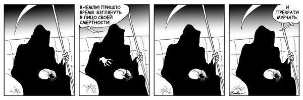

ПРИВЕТСТВУЮ
Антропоморфная сущность
| Имя | :СМЕРТЬ |
| Возраст | :Вечен |
| Рост | :2 м 13 см |
| Адрес | :Вне пространства |
Меня редко когда ждут и ищут.
Мой дом не привязан к определённой точке во времени и пространстве.
В случае крайней необходимости общения со мной, используйте обряд АшкЭнте.
Для проведения обряда АшкЭнте (вызова МЕНЯ) вам понадобятся:
Смерть - это не только неизбежное явление, но и двухметровый скелет с косой.
Я НЕ убиваю. Я занимаюсь человеком с момента убийства и дальше. Согласитесь, мир, в котором людей убивают, а они после этого не умирают, чертовски глуп.
Люди не видят меня потому, что их сознание советует им не делать этого. Но неужели вы думаете, что мне больше делать нечего, кроме как день и ночь бегать за вами?
Да я не приду и в двадцать пять минут двенадцатого, если могу прийти в полночь.
Встречаю души умерших. Успокаиваю их. Объясняю ситуацию и забираю из мира живых, перерезав косой нить, связывающую их с бренными останками.
Кстати, просто поразительно, насколько меняет человека самый обычный процесс умирания.
Часто приходится объяснять, что любые апелляции по поводу случившегося - бесполезны. И рассказывать, какой будет загробная жизнь (каждый получает то, что, как он считает, его ждёт).
Я с большим любопытством отношусь к людям. Хочу понять, что же в жизни такого, что с ней так не хочется расставаться. Поэтому иногда пробую себя в человеческих профессиях. С успехом работал поваром, жнецом.
Когда у меня наконец-то появляется время, я его трачу. Люблю удить рыбу, вкусно готовлю. Особенно люблю карри. Отлично играю в бильярд и дартс. Иногда устраиваю вечеринки с друзьями.
Считаю, что кошки  - лучшее, что есть в этом мире. Кстати, им следует давать короткие имена, которые не стыдно выкрикивать по ночам на всю округу.
Жизнь - это привилегия живых. Когда делаешь шаг с обрыва, жизнь моментально принимает очень четкое направление. Но никогда не поздно ею наслаждаться.